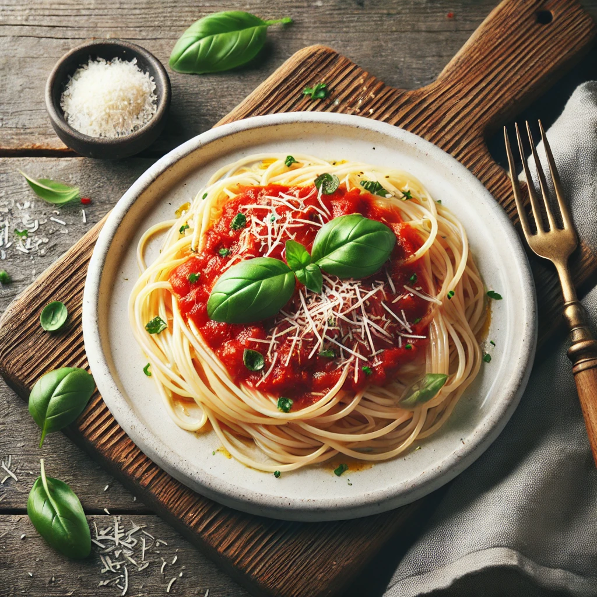

Home
Spaghetti

Spaghetti Recipe
Spaghetti Bolognese is a classic Italian pasta dish
featuring spaghetti topped with a rich and savory meat-based tomato sauce,
often flavored with garlic, onions, and herbs.
Traditionally from Bologna, it is a hearty and comforting meal enjoyed worldwide.
Ingredients
- Spaghetti: 400 g (dry, serves 4)
- Minced Beef: 400 g (can substitute with ground pork or a mix)
- Onion: 1 medium, finely chopped (about 100 g)
- Garlic: 2 cloves, minced (about 5 g)
- Carrot: 1 medium, finely diced (about 50 g)
- Celery: 1 stalk, finely diced (about 50 g)
- Canned Tomatoes: 400 g (or fresh tomatoes, peeled and chopped)
- Tomato Paste: 2 tablespoons (for richness)
- Red Wine: 100 ml (optional, adds depth to the sauce)
- Olive Oil: 2 tablespoons (for sautéing)
- Italian Herbs: 1 teaspoon (dried oregano and basil, or fresh herbs if available)
- Salt and Pepper: To taste
- Parmesan Cheese: For garnish, freshly grated (optional)
- Parsley: Fresh, chopped, for garnish (optional)
Step by Step Recipe
Prepare the Ingredients
- Finely chop 1 onion, 2 garlic cloves, 1 carrot, and 1 celery stalk.
- Measure 400 g of minced beef and 100 ml of red wine.
- Prepare 400 g of canned tomatoes and 2 tablespoons of tomato paste.
- Cook 400 g of spaghetti according to package instructions.
Cook the Sauce
- Heat 2 tablespoons of olive oil in a large skillet over medium heat.
- Add the chopped onion, carrot, celery, and garlic. Sauté for 5 minutes until softened.
- Add the minced beef to the skillet. Cook for 5-7 minutes until browned.
- Stir in the red wine and let it simmer for 2 minutes.
- Add the canned tomatoes, tomato paste, and season with salt, pepper, and Italian herbs.
- Reduce the heat to low and let the sauce simmer for 30 minutes, stirring occasionally.
Combine the Spaghetti and Sauce
- Drain the cooked spaghetti and place it in the skillet with the Bolognese sauce.
- Toss to coat the spaghetti evenly with the sauce.
Serve
- Plate the spaghetti Bolognese and garnish with freshly grated Parmesan cheese and chopped parsley.
- Serve warm with a side of garlic bread or a fresh salad.